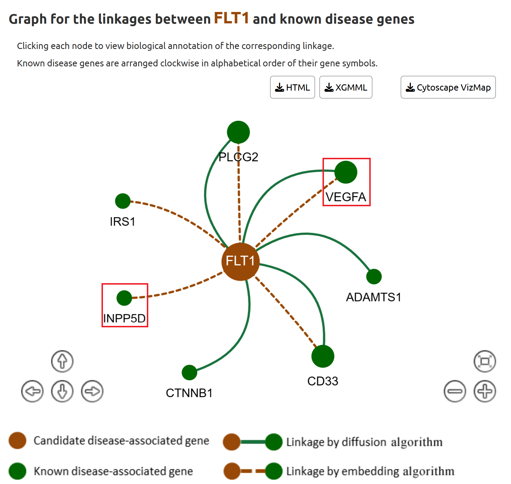

Blood proteins are crucial to understand the disease mechanism for Alzheimer's disease (AD). Here, we use the proteomic datasets from "Alzheimers Dement, 18:88" to show the case study. This study identified 429 differentially expressed genes (DEGs) by comparing AD patients with healthy controls.
We submitted 429 plasma proteins (Genes of Interest) to DDK-linker. We selected the linkage algorithms ("DeepWalk embedding algorithm" and "RWR diffusion algorithm") to identify the disease signals. And the known AD genes (we chose the cutoff value of 0.3) were used as the algorithm seeds (Figure 1).
Figure 1. Input page (This case study has been integrated DDK-Linker as “Example 1”).
After submitting, DDK-Linker performed the linkage analysis to discover disease-associated signals (98 candidate disease-associated genes) in submitted genes. Click on "Details" for each gene we can examine its corresponding linkages with known disease genes (Figure 2).
Among the top 18 high confidence candidates, we found two most promising and biologically plausible genes: IGFBP3 and FLT1.
Figure 2. The list of candidate disease genes.

Figure 3. The linkages between FLT1 and known disease genes.
In Figure 3, FLT1 has linkages with the known disease gene VEGFA (both diffusion and embedding algorithms), and INPP5D (embedding algorithm). Therefore, we speculated that FLT1 participate in similar disease processes. In fact, FLT1 was found to be the receptor of VEGFA, associating with amyloid plaque (Mol Psychiatry, 26(3):888-896).INPP5D has also been reported to be related with amyloid-β deposition in AD patients, just like FLT1 (Neurobiol Dis, 153:105303).
Figure 4. The linkages between IGFBP-3 and known disease genes.
In Figure 4A, we found the candidate disease gene IGFBP-3 is linked to known disease genes IGF-1 and TF (based on both diffusion and embedding algorithms). By the bioinformatics annotation page (Figure 4 B and C), we found all these three genes (IGFBP-3, IGF-1 and TF) share the same GO term of "phosphorylation". The most common primary characteristics of AD is that neurofibrillary tangles are largely composed of hyper-phosphorylated tau. And both IGF-1 and TF have been reported to be related with neurofibrillary tangles (Metabolites, 11(9):616; Mol Brain, 8(1):82). Thus, we inferred IGFBP-3 may be related to tau phosphorylation. These linkages provided us crucial clues for further experiments. In fact, IGFBP-3 has been found to affect the tau phosphorylation by binding to IGF-1 (Mol Brain, 8(1):82).
Based on the DDK-Linker results and the related literatures, we can present the possible pathogenesis of AD in Figure 5, which can provide rich clues for subsequent experimental studies.
Figure 5. Use DDK-Linker to uncover the key disease signals in proteomics data for AD.